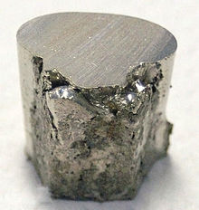

Nickel
|  | |||||||||||||||||||||||||||||||||||||||||||||||||||||||||||||||||||||||||||||||||||||||||||||||||||||||||||||||||||||||||||||||||||||||||||||||||||||||||||||||||||||||||||||||||||||||||||||||||||||||||||||||||||||||||||||||||||||
| General properties | |||||||||||||||||||||||||||||||||||||||||||||||||||||||||||||||||||||||||||||||||||||||||||||||||||||||||||||||||||||||||||||||||||||||||||||||||||||||||||||||||||||||||||||||||||||||||||||||||||||||||||||||||||||||||||||||||||||
|---|---|---|---|---|---|---|---|---|---|---|---|---|---|---|---|---|---|---|---|---|---|---|---|---|---|---|---|---|---|---|---|---|---|---|---|---|---|---|---|---|---|---|---|---|---|---|---|---|---|---|---|---|---|---|---|---|---|---|---|---|---|---|---|---|---|---|---|---|---|---|---|---|---|---|---|---|---|---|---|---|---|---|---|---|---|---|---|---|---|---|---|---|---|---|---|---|---|---|---|---|---|---|---|---|---|---|---|---|---|---|---|---|---|---|---|---|---|---|---|---|---|---|---|---|---|---|---|---|---|---|---|---|---|---|---|---|---|---|---|---|---|---|---|---|---|---|---|---|---|---|---|---|---|---|---|---|---|---|---|---|---|---|---|---|---|---|---|---|---|---|---|---|---|---|---|---|---|---|---|---|---|---|---|---|---|---|---|---|---|---|---|---|---|---|---|---|---|---|---|---|---|---|---|---|---|---|---|---|---|---|---|---|---|---|---|---|---|---|---|---|---|---|---|---|---|---|---|---|---|
| Name, symbol | nickel, Ni | ||||||||||||||||||||||||||||||||||||||||||||||||||||||||||||||||||||||||||||||||||||||||||||||||||||||||||||||||||||||||||||||||||||||||||||||||||||||||||||||||||||||||||||||||||||||||||||||||||||||||||||||||||||||||||||||||||||
| Pronunciation | /ˈnɪkəl/ NIK-əl |
||||||||||||||||||||||||||||||||||||||||||||||||||||||||||||||||||||||||||||||||||||||||||||||||||||||||||||||||||||||||||||||||||||||||||||||||||||||||||||||||||||||||||||||||||||||||||||||||||||||||||||||||||||||||||||||||||||
| Appearance | lustrous, metallic, and silver with a gold tinge | ||||||||||||||||||||||||||||||||||||||||||||||||||||||||||||||||||||||||||||||||||||||||||||||||||||||||||||||||||||||||||||||||||||||||||||||||||||||||||||||||||||||||||||||||||||||||||||||||||||||||||||||||||||||||||||||||||||
| Nickel in the periodic table | |||||||||||||||||||||||||||||||||||||||||||||||||||||||||||||||||||||||||||||||||||||||||||||||||||||||||||||||||||||||||||||||||||||||||||||||||||||||||||||||||||||||||||||||||||||||||||||||||||||||||||||||||||||||||||||||||||||
|
|||||||||||||||||||||||||||||||||||||||||||||||||||||||||||||||||||||||||||||||||||||||||||||||||||||||||||||||||||||||||||||||||||||||||||||||||||||||||||||||||||||||||||||||||||||||||||||||||||||||||||||||||||||||||||||||||||||
| Atomic number | 28 | ||||||||||||||||||||||||||||||||||||||||||||||||||||||||||||||||||||||||||||||||||||||||||||||||||||||||||||||||||||||||||||||||||||||||||||||||||||||||||||||||||||||||||||||||||||||||||||||||||||||||||||||||||||||||||||||||||||
| Standard atomic weight (±) | 58.6934(4)[1] | ||||||||||||||||||||||||||||||||||||||||||||||||||||||||||||||||||||||||||||||||||||||||||||||||||||||||||||||||||||||||||||||||||||||||||||||||||||||||||||||||||||||||||||||||||||||||||||||||||||||||||||||||||||||||||||||||||||
| Element category | transition metal | ||||||||||||||||||||||||||||||||||||||||||||||||||||||||||||||||||||||||||||||||||||||||||||||||||||||||||||||||||||||||||||||||||||||||||||||||||||||||||||||||||||||||||||||||||||||||||||||||||||||||||||||||||||||||||||||||||||
| Group, block | group 10, d-block | ||||||||||||||||||||||||||||||||||||||||||||||||||||||||||||||||||||||||||||||||||||||||||||||||||||||||||||||||||||||||||||||||||||||||||||||||||||||||||||||||||||||||||||||||||||||||||||||||||||||||||||||||||||||||||||||||||||
| Period | period 4 | ||||||||||||||||||||||||||||||||||||||||||||||||||||||||||||||||||||||||||||||||||||||||||||||||||||||||||||||||||||||||||||||||||||||||||||||||||||||||||||||||||||||||||||||||||||||||||||||||||||||||||||||||||||||||||||||||||||
| Electron configuration | [Ar] 3d8 4s2 or [Ar] 3d9 4s1 |
||||||||||||||||||||||||||||||||||||||||||||||||||||||||||||||||||||||||||||||||||||||||||||||||||||||||||||||||||||||||||||||||||||||||||||||||||||||||||||||||||||||||||||||||||||||||||||||||||||||||||||||||||||||||||||||||||||
| per shell | 2, 8, 16, 2 or 2, 8, 17, 1 | ||||||||||||||||||||||||||||||||||||||||||||||||||||||||||||||||||||||||||||||||||||||||||||||||||||||||||||||||||||||||||||||||||||||||||||||||||||||||||||||||||||||||||||||||||||||||||||||||||||||||||||||||||||||||||||||||||||
| Physical properties | |||||||||||||||||||||||||||||||||||||||||||||||||||||||||||||||||||||||||||||||||||||||||||||||||||||||||||||||||||||||||||||||||||||||||||||||||||||||||||||||||||||||||||||||||||||||||||||||||||||||||||||||||||||||||||||||||||||
| Phase | solid | ||||||||||||||||||||||||||||||||||||||||||||||||||||||||||||||||||||||||||||||||||||||||||||||||||||||||||||||||||||||||||||||||||||||||||||||||||||||||||||||||||||||||||||||||||||||||||||||||||||||||||||||||||||||||||||||||||||
| Melting point | 1728 K (1455 °C, 2651 °F) | ||||||||||||||||||||||||||||||||||||||||||||||||||||||||||||||||||||||||||||||||||||||||||||||||||||||||||||||||||||||||||||||||||||||||||||||||||||||||||||||||||||||||||||||||||||||||||||||||||||||||||||||||||||||||||||||||||||
| Boiling point | 3003 K (2730 °C, 4946 °F) | ||||||||||||||||||||||||||||||||||||||||||||||||||||||||||||||||||||||||||||||||||||||||||||||||||||||||||||||||||||||||||||||||||||||||||||||||||||||||||||||||||||||||||||||||||||||||||||||||||||||||||||||||||||||||||||||||||||
| Density near r.t. | 8.908 g·cm−3 | ||||||||||||||||||||||||||||||||||||||||||||||||||||||||||||||||||||||||||||||||||||||||||||||||||||||||||||||||||||||||||||||||||||||||||||||||||||||||||||||||||||||||||||||||||||||||||||||||||||||||||||||||||||||||||||||||||||
| when liquid, at m.p. | 7.81 g·cm−3 | ||||||||||||||||||||||||||||||||||||||||||||||||||||||||||||||||||||||||||||||||||||||||||||||||||||||||||||||||||||||||||||||||||||||||||||||||||||||||||||||||||||||||||||||||||||||||||||||||||||||||||||||||||||||||||||||||||||
| Heat of fusion | 17.48 kJ·mol−1 | ||||||||||||||||||||||||||||||||||||||||||||||||||||||||||||||||||||||||||||||||||||||||||||||||||||||||||||||||||||||||||||||||||||||||||||||||||||||||||||||||||||||||||||||||||||||||||||||||||||||||||||||||||||||||||||||||||||
| Heat of vaporization | 379 kJ·mol−1 | ||||||||||||||||||||||||||||||||||||||||||||||||||||||||||||||||||||||||||||||||||||||||||||||||||||||||||||||||||||||||||||||||||||||||||||||||||||||||||||||||||||||||||||||||||||||||||||||||||||||||||||||||||||||||||||||||||||
| Molar heat capacity | 26.07 J·mol−1·K−1 | ||||||||||||||||||||||||||||||||||||||||||||||||||||||||||||||||||||||||||||||||||||||||||||||||||||||||||||||||||||||||||||||||||||||||||||||||||||||||||||||||||||||||||||||||||||||||||||||||||||||||||||||||||||||||||||||||||||
vapor pressure
|
|||||||||||||||||||||||||||||||||||||||||||||||||||||||||||||||||||||||||||||||||||||||||||||||||||||||||||||||||||||||||||||||||||||||||||||||||||||||||||||||||||||||||||||||||||||||||||||||||||||||||||||||||||||||||||||||||||||
| Atomic properties | |||||||||||||||||||||||||||||||||||||||||||||||||||||||||||||||||||||||||||||||||||||||||||||||||||||||||||||||||||||||||||||||||||||||||||||||||||||||||||||||||||||||||||||||||||||||||||||||||||||||||||||||||||||||||||||||||||||
| Oxidation states | 4,[2] 3, 2, 1,[3] −1 (a mildly basic oxide) | ||||||||||||||||||||||||||||||||||||||||||||||||||||||||||||||||||||||||||||||||||||||||||||||||||||||||||||||||||||||||||||||||||||||||||||||||||||||||||||||||||||||||||||||||||||||||||||||||||||||||||||||||||||||||||||||||||||
| Electronegativity | Pauling scale: 1.91 | ||||||||||||||||||||||||||||||||||||||||||||||||||||||||||||||||||||||||||||||||||||||||||||||||||||||||||||||||||||||||||||||||||||||||||||||||||||||||||||||||||||||||||||||||||||||||||||||||||||||||||||||||||||||||||||||||||||
| Ionization energies | 1st: 737.1 kJ·mol−1 2nd: 1753.0 kJ·mol−1 3rd: 3395 kJ·mol−1 (more) |
||||||||||||||||||||||||||||||||||||||||||||||||||||||||||||||||||||||||||||||||||||||||||||||||||||||||||||||||||||||||||||||||||||||||||||||||||||||||||||||||||||||||||||||||||||||||||||||||||||||||||||||||||||||||||||||||||||
| Atomic radius | empirical: 124 pm | ||||||||||||||||||||||||||||||||||||||||||||||||||||||||||||||||||||||||||||||||||||||||||||||||||||||||||||||||||||||||||||||||||||||||||||||||||||||||||||||||||||||||||||||||||||||||||||||||||||||||||||||||||||||||||||||||||||
| Covalent radius | 124±4 pm | ||||||||||||||||||||||||||||||||||||||||||||||||||||||||||||||||||||||||||||||||||||||||||||||||||||||||||||||||||||||||||||||||||||||||||||||||||||||||||||||||||||||||||||||||||||||||||||||||||||||||||||||||||||||||||||||||||||
| Van der Waals radius | 163 pm | ||||||||||||||||||||||||||||||||||||||||||||||||||||||||||||||||||||||||||||||||||||||||||||||||||||||||||||||||||||||||||||||||||||||||||||||||||||||||||||||||||||||||||||||||||||||||||||||||||||||||||||||||||||||||||||||||||||
| Miscellanea | |||||||||||||||||||||||||||||||||||||||||||||||||||||||||||||||||||||||||||||||||||||||||||||||||||||||||||||||||||||||||||||||||||||||||||||||||||||||||||||||||||||||||||||||||||||||||||||||||||||||||||||||||||||||||||||||||||||
| Crystal structure | face-centered cubic (fcc)
 |
||||||||||||||||||||||||||||||||||||||||||||||||||||||||||||||||||||||||||||||||||||||||||||||||||||||||||||||||||||||||||||||||||||||||||||||||||||||||||||||||||||||||||||||||||||||||||||||||||||||||||||||||||||||||||||||||||||
| Speed of sound thin rod | 4900 m·s−1 (at r.t.) | ||||||||||||||||||||||||||||||||||||||||||||||||||||||||||||||||||||||||||||||||||||||||||||||||||||||||||||||||||||||||||||||||||||||||||||||||||||||||||||||||||||||||||||||||||||||||||||||||||||||||||||||||||||||||||||||||||||
| Thermal expansion | 13.4 µm·m−1·K−1 (at 25 °C) | ||||||||||||||||||||||||||||||||||||||||||||||||||||||||||||||||||||||||||||||||||||||||||||||||||||||||||||||||||||||||||||||||||||||||||||||||||||||||||||||||||||||||||||||||||||||||||||||||||||||||||||||||||||||||||||||||||||
| Thermal conductivity | 90.9 W·m−1·K−1 | ||||||||||||||||||||||||||||||||||||||||||||||||||||||||||||||||||||||||||||||||||||||||||||||||||||||||||||||||||||||||||||||||||||||||||||||||||||||||||||||||||||||||||||||||||||||||||||||||||||||||||||||||||||||||||||||||||||
| Electrical resistivity | 69.3 nΩ·m (at 20 °C) | ||||||||||||||||||||||||||||||||||||||||||||||||||||||||||||||||||||||||||||||||||||||||||||||||||||||||||||||||||||||||||||||||||||||||||||||||||||||||||||||||||||||||||||||||||||||||||||||||||||||||||||||||||||||||||||||||||||
| Magnetic ordering | ferromagnetic | ||||||||||||||||||||||||||||||||||||||||||||||||||||||||||||||||||||||||||||||||||||||||||||||||||||||||||||||||||||||||||||||||||||||||||||||||||||||||||||||||||||||||||||||||||||||||||||||||||||||||||||||||||||||||||||||||||||
| Young's modulus | 200 GPa | ||||||||||||||||||||||||||||||||||||||||||||||||||||||||||||||||||||||||||||||||||||||||||||||||||||||||||||||||||||||||||||||||||||||||||||||||||||||||||||||||||||||||||||||||||||||||||||||||||||||||||||||||||||||||||||||||||||
| Shear modulus | 76 GPa | ||||||||||||||||||||||||||||||||||||||||||||||||||||||||||||||||||||||||||||||||||||||||||||||||||||||||||||||||||||||||||||||||||||||||||||||||||||||||||||||||||||||||||||||||||||||||||||||||||||||||||||||||||||||||||||||||||||
| Bulk modulus | 180 GPa | ||||||||||||||||||||||||||||||||||||||||||||||||||||||||||||||||||||||||||||||||||||||||||||||||||||||||||||||||||||||||||||||||||||||||||||||||||||||||||||||||||||||||||||||||||||||||||||||||||||||||||||||||||||||||||||||||||||
| Poisson ratio | 0.31 | ||||||||||||||||||||||||||||||||||||||||||||||||||||||||||||||||||||||||||||||||||||||||||||||||||||||||||||||||||||||||||||||||||||||||||||||||||||||||||||||||||||||||||||||||||||||||||||||||||||||||||||||||||||||||||||||||||||
| Mohs hardness | 4.0 | ||||||||||||||||||||||||||||||||||||||||||||||||||||||||||||||||||||||||||||||||||||||||||||||||||||||||||||||||||||||||||||||||||||||||||||||||||||||||||||||||||||||||||||||||||||||||||||||||||||||||||||||||||||||||||||||||||||
| Vickers hardness | 638 MPa | ||||||||||||||||||||||||||||||||||||||||||||||||||||||||||||||||||||||||||||||||||||||||||||||||||||||||||||||||||||||||||||||||||||||||||||||||||||||||||||||||||||||||||||||||||||||||||||||||||||||||||||||||||||||||||||||||||||
| Brinell hardness | 667–1600 MPa | ||||||||||||||||||||||||||||||||||||||||||||||||||||||||||||||||||||||||||||||||||||||||||||||||||||||||||||||||||||||||||||||||||||||||||||||||||||||||||||||||||||||||||||||||||||||||||||||||||||||||||||||||||||||||||||||||||||
| CAS Registry Number | 7440-02-0 | ||||||||||||||||||||||||||||||||||||||||||||||||||||||||||||||||||||||||||||||||||||||||||||||||||||||||||||||||||||||||||||||||||||||||||||||||||||||||||||||||||||||||||||||||||||||||||||||||||||||||||||||||||||||||||||||||||||
| History | |||||||||||||||||||||||||||||||||||||||||||||||||||||||||||||||||||||||||||||||||||||||||||||||||||||||||||||||||||||||||||||||||||||||||||||||||||||||||||||||||||||||||||||||||||||||||||||||||||||||||||||||||||||||||||||||||||||
| Discovery and first isolation | Axel Fredrik Cronstedt (1751) | ||||||||||||||||||||||||||||||||||||||||||||||||||||||||||||||||||||||||||||||||||||||||||||||||||||||||||||||||||||||||||||||||||||||||||||||||||||||||||||||||||||||||||||||||||||||||||||||||||||||||||||||||||||||||||||||||||||
| Most stable isotopes | |||||||||||||||||||||||||||||||||||||||||||||||||||||||||||||||||||||||||||||||||||||||||||||||||||||||||||||||||||||||||||||||||||||||||||||||||||||||||||||||||||||||||||||||||||||||||||||||||||||||||||||||||||||||||||||||||||||
|
|||||||||||||||||||||||||||||||||||||||||||||||||||||||||||||||||||||||||||||||||||||||||||||||||||||||||||||||||||||||||||||||||||||||||||||||||||||||||||||||||||||||||||||||||||||||||||||||||||||||||||||||||||||||||||||||||||||
| Decay modes in parentheses are predicted, but have not yet been observed | |||||||||||||||||||||||||||||||||||||||||||||||||||||||||||||||||||||||||||||||||||||||||||||||||||||||||||||||||||||||||||||||||||||||||||||||||||||||||||||||||||||||||||||||||||||||||||||||||||||||||||||||||||||||||||||||||||||
{kind=link}
Nickel is a chemical element with symbol Ni and atomic number 28. It is a silvery-white lustrous metal with a slight golden tinge. Nickel belongs to the transition metals and is hard and ductile. Pure nickel shows a significant chemical activity that can be observed when nickel is powdered to maximize the exposed surface area on which reactions can occur, but larger pieces of the metal are slow to react with air at ambient conditions due to the formation of a protective oxide surface. Even then, nickel is reactive enough with oxygen that native nickel is rarely found on Earth's surface, being mostly confined to the interiors of larger nickel–iron meteorites that were protected from oxidation during their time in space. On Earth, such native nickel is found in combination with iron, a reflection of those elements' origin as major end products of supernova nucleosynthesis. An iron–nickel mixture is thought to compose Earth's inner core.[4]
The use of nickel (as a natural meteoric nickel–iron alloy) has been traced as far back as 3500 BCE. Nickel was first isolated and classified as a chemical element in 1751 by Axel Fredrik Cronstedt, who initially mistook its ore for a copper mineral. The element's name comes from a mischievous sprite of German miner mythology, Nickel (similar to Old Nick), that personified the fact that copper-nickel ores resisted refinement into copper. An economically important source of nickel is the iron ore limonite, which often contains 1-2% nickel. Nickel's other important ore minerals include garnierite, and pentlandite. Major production sites include the Sudbury region in Canada (which is thought to be of meteoric origin), New Caledonia in the Pacific, and Norilsk in Russia.
Because of nickel's slow rate of oxidation at room temperature, it is considered corrosion-resistant. Historically, this has led to its use for plating metals such as iron and brass, coating chemistry equipment, and manufacturing certain alloys that retain a high silvery polish, such as German silver. About 6% of world nickel production is still used for corrosion-resistant pure-nickel plating. Nickel-plated items are noted for provoking nickel allergy. Nickel has been widely used in coins, though its rising price has led to some replacement with cheaper metals in recent years.
Nickel is one of four elements that are ferromagnetic around room temperature. Alnico permanent magnets based partly on nickel are of intermediate strength between iron-based permanent magnets and rare-earth magnets. The metal is chiefly valuable in the modern world for the alloys it forms; about 60% of world production is used in nickel-steels (particularly stainless steel). Other common alloys, as well as some new superalloys, make up most of the remainder of world nickel use, with chemical uses for nickel compounds consuming less than 3% of production.[5] As a compound, nickel has a number of niche chemical manufacturing uses, such as a catalyst for hydrogenation. Enzymes of some microorganisms and plants contain nickel as an active site, which makes the metal an essential nutrient for them.
Contents
[hide]Properties[edit]
Atomic and physical properties[edit]
{kind=link}
Nickel is a silvery-white metal with a slight golden tinge that takes a high polish. It is one of only four elements that are magnetic at or near room temperature, the others being iron, cobalt and gadolinium. Its Curie temperature is 355 °C (671 °F), meaning that bulk nickel is non-magnetic above this temperature.[6] The unit cell of nickel is a face-centered cube with the lattice parameter of 0.352 nm, giving an atomic radius of 0.124 nm. This crystal structure is stable to pressures of at least 70 GPa. Nickel belongs to the transition metals and is hard and ductile.
Electron configuration dispute[edit]
The nickel atom has two electron configurations, [Ar] 3d8 4s2 and [Ar] 3d9 4s1, which are very close in energy – the symbol [Ar] refers to the argon-like core structure. There is some disagreement as to which should be considered the lowest energy configuration.[7] Chemistry textbooks quote the electron configuration of nickel as [Ar] 4s2 3d8,[8] or equivalently as [Ar] 3d8 4s2.[9] This configuration agrees with the Madelung energy ordering rule, which predicts that 4s is filled before 3d. It is supported by the experimental fact that the lowest energy state of the nickel atom is a 3d8 4s2 energy level, specifically the 3d8(3F) 4s2 3F, J = 4 level.[10]
However, each of these configurations in fact gives rise to a set of states of different energies.[10] The two sets of energies overlap, and the average energy of states having configuration [Ar] 3d9 4s1 is in fact lower than the average energy of states having configuration [Ar] 3d8 4s2. For this reason, the research literature on atomic calculations quotes the ground state configuration of nickel as [Ar] 3d9 4s1.[7]
Isotopes[edit]
Naturally occurring nickel is composed of five stable isotopes; 58
Ni, 60
Ni, 61
Ni, 62
Ni and 64
Ni with 58
Ni being the most abundant (68.077% natural abundance). 62
Ni has the highest nuclear binding energy of any nuclide. Its binding energy is greater than both 56
Fe, often incorrectly cited as the largest, and 58
Fe.[11] 18 radioisotopes have been characterised with the most stable being 59
Ni with a half-life of 76,000 years, 63
Ni with a half-life of 100.1 years, and 56
Ni with a half-life of 6.077 days. All of the remaining radioactive
isotopes have half-lives that are less than 60 hours and the majority
of these have half-lives that are less than 30 seconds. This element
also has one meta state.[12]
Nickel-56 is produced by the silicon burning process and later set free in large quantities during type Ia supernovae. The shape of the light curve of these supernovae at intermediate to late-times corresponds to the decay via electron capture of nickel-56 to cobalt-56 and ultimately to iron-56.[13] Nickel-59 is a long-lived cosmogenic radionuclide with a half-life of 76,000 years. 59
Ni has found many applications in isotope geology. 59
Ni has been used to date the terrestrial age of meteorites and to determine abundances of extraterrestrial dust in ice and sediment. Nickel-60 is the daughter product of the extinct radionuclide 60
Fe, which decays with a half-life of 2.6 million years. Because 60
Fe has such a long half-life, its persistence in materials in the solar system at high enough concentrations may have generated observable variations in the isotopic composition of 60
Ni. Therefore, the abundance of 60
Ni present in extraterrestrial material may provide insight into the origin of the solar system and its early history. Nickel-62 has the highest binding energy per nucleon of any isotope for any element (8.7946 MeV/nucleon).[14] Isotopes heavier than 62
Ni cannot be formed by nuclear fusion without losing energy. 48Ni, discovered in 1999, is the most proton-rich heavy element isotope known. With 28 protons and 20 neutrons 48Ni is "double magic" (like 208Pb) and therefore unusually stable.[12][15]
The isotopes of nickel range in atomic weight from 48 u (48
Ni) to 78 u (78
Ni). Nickel-78's half-life was recently measured at 110 milliseconds, and is believed an important isotope in supernova nucleosynthesis of elements heavier than iron.[16]
Occurrence[edit]
{kind=link}
On Earth, nickel occurs most often in combination with sulfur and iron in pentlandite, with sulfur in millerite, with arsenic in the mineral nickeline, and with arsenic and sulfur in nickel galena.[17] Nickel is commonly found in iron meteorites as the alloys kamacite and taenite.
The bulk of the nickel mined comes from two types of ore deposits. The first are laterites, where the principal ore minerals are nickeliferous limonite: (Fe, Ni)O(OH) and garnierite (a hydrous nickel silicate): (Ni, Mg)
3Si
2O
5(OH)
4. The second are magmatic sulfide deposits, where the principal ore mineral is pentlandite: (Ni, Fe)
9S
8.
Australia and New Caledonia have the biggest estimate reserves (45% all together).[18]
In terms of World Resources, identified land-based resources averaging 1% nickel or greater contain at least 130 million tons of nickel (about the double of known reserves). About 60% is in laterites and 40% is in sulfide deposits.[18]
Based on geophysical evidence, most of the nickel on Earth is postulated to be concentrated in the Earth's outer and inner cores. Kamacite and taenite are naturally occurring alloys of iron and nickel. For kamacite, the alloy is usually in the proportion of 90:10 to 95:5, although impurities (such as cobalt or carbon) may be present, while for taenite the nickel content is between 20% and 65%. Kamacite and taenite occur in nickel iron meteorites.[19]
Compounds[edit]
{kind=link}
The most common oxidation state of nickel is +2, but compounds of Ni0, Ni+, and Ni3+ are well known, as well as exotic oxidation states Ni2−, Ni1−, and Ni4+.[20]
Nickel(0)[edit]
Tetracarbonylnickel (Ni(CO)
4), discovered by Ludwig Mond,[21] is a volatile, highly toxic liquid at room temperature. On heating, the complex decomposes back to nickel and carbon monoxide:
- Ni(CO)
4 Ni + 4 CO
Ni + 4 CO
This behavior is exploited in the Mond process for purifying nickel, as described above. The related nickel(0) complex bis(cyclooctadiene)nickel(0) is a useful catalyst in organonickel chemistry due to the easily displaced cod ligands.
Nickel(I)[edit]
Nickel(I) complexes are uncommon, however one example is the tetrahedral complex NiBr(PPh3)3. Many nickel(I) complexes feature Ni-Ni bonding, such as the dark red diamagnetic K
4[Ni
2(CN)
6] prepared by reduction of K
2[Ni
2(CN)
6] with sodium amalgam. This compound is oxidised in water, liberating H
2.[22]
It is thought that the nickel(I) oxidation state is important to nickel-containing enzymes, such as [NiFe]-hydrogenase, which catalyzes the reversible reduction of protons to H
2.[23]
{kind=link}
Nickel(II)[edit]
{kind=link}
3)
6]2+
, [Ni(C2H4(NH2)2)]2+, [NiCl
4]2−
, [Ni(H
2O)
6]2+
{kind=link}
Nickel(II) forms compounds with all common anions, i.e. the sulfide, sulfate, carbonate, hydroxide, carboxylates, and halides. Nickel(II) sulfate
is produced in large quantities by dissolving nickel metal or oxides in
sulfuric acid. It exists as both a hexa- and heptahydrates.[24] This compound is useful for electroplating
nickel. Common salts of nickel, such as the chloride, nitrate, and
sulfate, dissolve in water to give green solutions containing the metal aquo complex [Ni(H
2O)
6]2+
.
The four halides form nickel compounds. The structures of these solids feature octahedral Ni centres. Nickel(II) chloride
is most common, and its behavior is illustrative of the other halides.
Nickel(II) chloride is produced by dissolving nickel or its oxide in hydrochloric acid. It is usually encountered as the green hexahydrate, the formula of which is usually written NiCl2•6H2O. When dissolved in water, this salt forms the metal aquo complex [Ni(H
2O)
6]2+
. Dehydration of NiCl2•6H2O gives the yellow anhydrous NiCl
2.
Some tetracoordinate nickel(II) complexes, e.g. bis(triphenylphosphine)nickel chloride, exist both in tetrahedral and square planar geometries. The tetrahedral complexes are paramagnetic whereas the square planar complexes are diamagnetic. This equilibrium as well as the formation of octahedral complexes contrasts with the behavior of the divalent complexes of the heavier group 10 metals, palladium(II) and platinum(II), which tend to adopt only square-planar geometry.[20]
Nickelocene is known; it has an electron count of 20, making it relatively unstable.
{kind=link}
Nickel(III) and (IV)[edit]
Numerous Ni(III) compounds are known, with the first such examples being Nickel(III) trihalophosphines (NiIII(PPh3)X3.[25] Further, Ni(III) forms simple salts with fluoride[26] or oxide ions. Ni(III) can be stabilized by σ-donor ligands such as thiols and phosphines.[22] Ni(IV) is present in the mixed oxide BaNiO
3, while Ni(III) is present in nickel(III) oxide, which is used as the cathode in many rechargeable batteries, including nickel-cadmium, nickel-iron, nickel hydrogen, and nickel-metal hydride, and used by certain manufacturers in Li-ion batteries.[27] Ni(IV) remains a rare oxidation state of Nickel and very few compounds are known to date.[28][29]
History[edit]
Because the ores of nickel are easily mistaken for ores of silver, understanding of this metal and its use dates to relatively recent times. However, the unintentional use of nickel is ancient, and can be traced back as far as 3500 BCE. Bronzes from what is now Syria have been found to contain up to 2% nickel.[30] Further, there are Chinese manuscripts suggesting that "white copper" (cupronickel, known as baitong) was used there between 1700 and 1400 BCE. This Paktong white copper was exported to Britain as early as the 17th century, but the nickel content of this alloy was not discovered until 1822.[31]
{kind=link}
In medieval Germany, a red mineral was found in the Erzgebirge (Ore Mountains) that resembled copper ore. However, when miners were unable to extract any copper from it, they blamed a mischievous sprite of German mythology, Nickel (similar to Old Nick), for besetting the copper. They called this ore Kupfernickel from the German Kupfer for copper.[32][33][34][35] This ore is now known to be nickeline (aka niccolite), a nickel arsenide. In 1751, Baron Axel Fredrik Cronstedt was trying to extract copper from kupfernickel—and instead produced a white metal that he named after the spirit that had given its name to the mineral, nickel.[36] In modern German, Kupfernickel or Kupfer-Nickel designates the alloy cupronickel.
After its discovery, the only source for nickel was the rare Kupfernickel but, from 1824 on, nickel was obtained as a byproduct of cobalt blue production. The first large-scale producer of nickel was Norway, which exploited nickel-rich pyrrhotite from 1848 on. The introduction of nickel in steel production in 1889 increased the demand for nickel, and the nickel deposits of New Caledonia, which were discovered in 1865, provided most of the world's supply between 1875 and 1915. The discovery of the large deposits in the Sudbury Basin, Canada, in 1883, in Norilsk-Talnakh, Russia, in 1920, and in the Merensky Reef, South Africa, in 1924 made large-scale production of nickel possible.[31]
{kind=link}
Nickel has been a component of coins since the mid-19th century. However, in Birmingham there were already Dutch silver 18th century coins forged in nickel around 1833 (meant for trading in Malaya).[37] In the United States, the term "nickel" or "nick" originally applied to the copper-nickel Flying Eagle cent, which replaced copper with 12% nickel 1857–58, then the Indian Head cent of the same alloy from 1859–1864. Still later, in 1865, the term designated the three-cent nickel, with nickel increased to 25%. In 1866, the five-cent shield nickel (25% nickel, 75% copper) appropriated the designation. Along with the alloy proportion, this term has been used to the present in the United States. Coins of nearly pure nickel were first used in 1881 in Switzerland, and more notably 99.9% nickel five-cent coins were struck in Canada (the world's largest nickel producer at the time) during non-war years from 1922–1981, and their metal content made these coins magnetic.[38] During the wartime period 1942–45, most or all nickel was removed from Canadian and U.S. coins, due to nickel's war-critical use in armor.[33][39] Canada used 99.9% nickel from 1968 in its higher-value coins until 2000. In the 21st century, the high price of nickel has led to some replacement of the metal in coins around the world. Coins still made with nickel alloys include one- and two- Euro coins, 5¢, 10¢, 25¢ and 50¢ U.S. coins and 20p, 50p, £1 and £2 UK coins. The replacement of nickel-alloy 5p and 10p UK coins with nickel-plated steel models, begun in 2012, has caused dermatological controversy.[40]
World production[edit]
{kind=link}
The Philippines, Indonesia, Russia, Canada and Australia are the world's largest producers of nickel, as reported by the US Geological Survey.[18] The largest deposits of nickel in non-Russian Europe are located in Finland and Greece. Identified land-based resources averaging 1% nickel or greater contain at least 130 million tons of nickel. About 60% is in laterites and 40% is in sulfide deposits. In addition, extensive deep-sea resources of nickel are in manganese crusts and nodules covering large areas of the ocean floor, particularly in the Pacific Ocean.[42]
The one locality in the United States where nickel was commercially mined is Riddle, Oregon, where several square miles of nickel-bearing garnierite surface deposits are located. The mine closed in 1987.[43][44] The Eagle mine project is a new nickel mine in Michigan's upper peninsula. Completed in 2013, it is expected to begin operations in the fourth quarter of 2014.[45]
| Mine production and reserves[42] | 2012 (metric tons) | 2011 (metric tons) | Reserves (metric tons) |
|---|---|---|---|
| Australia | 230,000 | 215,000 | 20,000,000 |
| Botswana | 26,000 | 26,000 | 490,000 |
| Brazil | 140,000 | 209,000 | 7,500,000 |
| Canada | 220,000 | 220,000 | 3,300,000 |
| China | 91,000 | 89,800 | 3,000,000 |
| Colombia | 80,000 | 76,000 | 1,100,000 |
| Cuba | 72,000 | 71,000 | 5,500,000 |
| Dominican Republic | 24,000 | 21,700 | 970,000 |
| Indonesia | 320,000 | 290,000 | 3,900,000 |
| Madagascar | 22,000 | 5,900 | 1,600,000 |
| New Caledonia | 140,000 | 131,000 | 12,000,000 |
| Philippines | 330,000 | 270,000 | 1,100,000 |
| Russia | 270,000 | 267,000 | 6,100,000 |
| South Africa | 42,000 | 44,000 | 3,700,000 |
| Other countries | 120,000 | 103,000 | 4,600,000 |
| World total (metric tons, rounded) | 2,100,000 | 1,940,000 | 75,000,000 |
Extraction and purification[edit]
Nickel is recovered through extractive metallurgy: it is extracted from its ores by conventional roasting and reduction processes that yield a metal of greater than 75% purity. In many stainless steel applications, 75% pure nickel can be used without further purification, depending on the composition of the impurities.
Most sulfide ores have traditionally been processed using pyrometallurgical techniques to produce a matte for further refining. Recent advances in hydrometallurgical techniques have resulted in significant nickel purification using these processes. Most sulfide deposits have traditionally been processed by concentration through a froth flotation process followed by pyrometallurgical extraction. In hydrometallurgical processes, nickel sulfide ores undergo flotation (differential flotation if Ni/Fe ratio is too low) and then smelted. After producing the nickel matte, further processing is done via the Sherritt-Gordon process. First, copper is removed by adding hydrogen sulfide, leaving a concentrate of only cobalt and nickel. Then, solvent extraction is used to separate the cobalt and nickel, with the final nickel concentration greater than 99%.
{kind=link}
Electrorefining[edit]
A second common form of further refining involves the leaching of the metal matte into a nickel salt solution, followed by the electro-winning of the nickel from solution by plating it onto a cathode as electrolytic nickel.
Mond process[edit]
{kind=link}
Purification of nickel oxides to obtain the purest metal is performed via the Mond process, which increases the nickel concentrate to greater than 99.99% purity.[46] This process was patented by Ludwig Mond and has been in industrial use since before the beginning of the 20th century. In the process, nickel is reacted with carbon monoxide at around 40–80 °C to form nickel carbonyl in the presence of a sulfur catalyst. Iron gives iron pentacarbonyl, too, but this reaction is slow. If necessary, the nickel may be separated by distillation. Dicobalt octacarbonyl is also formed in nickel distillation as a by-product, but it decomposes to tetracobalt dodecacarbonyl at the reaction temperature to give a non-volatile solid.[5]
Nickel is re-obtained from the nickel carbonyl by one of two processes. It may be passed through a large chamber at high temperatures in which tens of thousands of nickel spheres, called pellets, are constantly stirred. It then decomposes, depositing pure nickel onto the nickel spheres. Alternatively, the nickel carbonyl may be decomposed in a smaller chamber at 230 °C to create a fine nickel powder. The resultant carbon monoxide is re-circulated and reused through the process. The highly pure nickel produced by this process is known as "carbonyl nickel".[47]
Metal value[edit]
The market price of nickel surged throughout 2006 and the early months of 2007; as of April 5, 2007, the metal was trading at US$52,300/tonne or $1.47/oz.[48] The price subsequently fell dramatically from these peaks, and as of September 19, 2013 the metal was trading at $13,778/tonne, or $0.39/oz.[49][50]
The US nickel coin contains 0.04 ounces (1.1 g) of nickel, which at the April 2007 price was worth 6.5 cents, along with 3.75 grams of copper worth about 3 cents, making the metal value over 9 cents. Since the face value of a nickel is 5 cents, this made it an attractive target for melting by people wanting to sell the metals at a profit. However, the United States Mint, in anticipation of this practice, implemented new interim rules on December 14, 2006, subject to public comment for 30 days, which criminalized the melting and export of cents and nickels.[51] Violators can be punished with a fine of up to $10,000 and/or imprisoned for a maximum of five years.
As of September 19, 2013, the melt value of a U.S. nickel (copper and nickel included) is $0.0450258, which is 90% of its face value.[52]
Applications[edit]
{kind=link}
The fraction of global nickel production presently used for various applications is as follows: 46% for making nickel steels; 34% in nonferrous alloys and superalloys; 14% electroplating, and 6% into other uses.[18][53]
Nickel is used in many specific and recognizable industrial and consumer products, including stainless steel, alnico magnets, coinage, rechargeable batteries, electric guitar strings, microphone capsules, and special alloys. It is also used for plating and as a green tint in glass. Nickel is preeminently an alloy metal, and its chief use is in the nickel steels and nickel cast irons, of which there are many varieties. It is also widely used in many other alloys, such as nickel brasses and bronzes, and alloys with copper, chromium, aluminium, lead, cobalt, silver, and gold (Inconel, Incoloy, Monel, Nimonic).[54]
{kind=link}
Because of its resistance to corrosion, nickel has been occasionally used historically as a substitute for decorative silver. Nickel was also occasionally used in some countries after 1859 as a cheap coinage metal (see above) but in the later years of the 20th century was largely replaced by cheaper stainless steel (i.e., iron) alloys, except notably in the United States and Canada.
Nickel is an excellent alloying agent for certain other precious metals, and so used in the so-called fire assay, as a collector of platinum group elements (PGE). As such, nickel is capable of full collection of all 6 PGE elements from ores, in addition to partial collection of gold. High-throughput nickel mines may also engage in PGE recovery (primarily platinum and palladium); examples are Norilsk in Russia and the Sudbury Basin in Canada.
Nickel foam or nickel mesh is used in gas diffusion electrodes for alkaline fuel cells.[55][56]
Nickel and its alloys are frequently used as catalysts for hydrogenation reactions. Raney nickel, a finely divided nickel-aluminium alloy, is one common form, however related catalysts are also often used, including related 'Raney-type' catalysts.
Nickel is a naturally magnetostrictive material, meaning that, in the presence of a magnetic field, the material undergoes a small change in length.[57][58] In the case of nickel, this change in length is negative (contraction of the material), which is known as negative magnetostriction and is on the order of 50 ppm.
Nickel is used as a binder in the cemented tungsten carbide or hardmetal industry and used in proportions of six to 12% by weight. Nickel can make the tungsten carbide magnetic and adds corrosion-resistant properties to the cemented tungsten carbide parts, although the hardness is lower than those of parts made with cobalt binder.[59]
Biological role[edit]
Although not recognized until the 1970s, nickel plays important roles in the biology of microorganisms and plants.[60][61] The plant enzyme urease (an enzyme that assists in the hydrolysis of urea) contains nickel. The NiFe-hydrogenases contain nickel in addition to iron-sulfur clusters. Such [NiFe]-hydrogenases characteristically oxidise H
2. A nickel-tetrapyrrole coenzyme, Cofactor F430, is present in the methyl coenzyme M reductase, which powers methanogenic archaea.[62] One of the carbon monoxide dehydrogenase enzymes consists of an Fe-Ni-S cluster.[63] Other nickel-containing enzymes include a rare bacterial class of superoxide dismutase[64] and glyoxalase I enzymes in bacteria and several parasitic eukaryotic trypanosomal parasites [65] (this enzyme in higher organisms, including yeast and mammals, uses divalent zinc, Zn2+).[66][67][68][69][70]
Nickel can have an impact on human health through infectious diseases arising from nickel-dependent bacteria.[71] Nickel released from Siberian Traps volcanic eruptions (site of the modern city of Norilsk) is suspected of having had a significant impact on the role played by Methanosarcina, a genus of euryarchaeote archaea that produced methane during the biggest extinction event on record.[72]
Toxicity[edit]
In the US, the minimal risk level of nickel and its compounds is set to 0.2 µg/m3 for inhalation during 15–364 days.[73] Nickel sulfide fume and dust are believed carcinogenic, and various other nickel compounds may be as well.[74][75][76] Nickel carbonyl, [Ni(CO)
4], is an extremely toxic gas. The toxicity of metal
carbonyls is a function of both the toxicity of the metal as well as the
carbonyl's ability to give off highly toxic carbon monoxide gas, and this one is no exception; nickel carbonyl is also explosive in air.[77][78]
In the US, the Tolerable Upper Limit of dietary nickel is 1000 µg/day,[79] while estimated average ingestion is 69-162 µg/day.[80] Large amounts of nickel (and chromium) – comparable to the estimated average ingestion above – leach into food cooked in stainless steel. For example, the amount of nickel leached after 10 cooking cycles into one serving of tomato sauce averages 88 µg.[81][82]
Sensitized individuals may show an allergy to nickel, affecting their skin, known as dermatitis. Sensitivity to nickel may also be present in patients with pompholyx. Nickel is an important cause of contact allergy, partly due to its use in jewellery intended for pierced ears.[83] Nickel allergies affecting pierced ears are often marked by itchy, red skin. Many earrings are now made nickel-free due to this problem. The amount of nickel allowed in products that come into contact with human skin is regulated by the European Union. In 2002, researchers found amounts of nickel being emitted by 1 and 2 Euro coins far in excess of those standards. This is believed to be due to a galvanic reaction.[84] Nickel was voted Allergen of the Year in 2008 by the American Contact Dermatitis Society.[85]
Reports also showed that both the nickel-induced activation of hypoxia-inducible factor (HIF-1) and the up-regulation of hypoxia-inducible genes are due to depleted intracellular ascorbate levels. The addition of ascorbate to the culture medium increased the intracellular ascorbate level and reversed both the metal-induced stabilization of HIF-1- and HIF-1α-dependent gene expression.[86][87]
See also[edit]
References[edit]
- Jump up ^ Standard Atomic Weights 2013. Commission on Isotopic Abundances and Atomic Weights
- Jump up ^ Carnes, Matthew; Buccella, Daniela; Chen, Judy Y.-C.; Ramirez, Arthur P.; Turro, Nicholas J.; Nuckolls, Colin; Steigerwald, Michael (2009). "A Stable Tetraalkyl Complex of Nickel(IV)". Angewandte Chemie International Edition 48 (2): 3384. doi:10.1002/anie.200804435.
- Jump up ^ Pfirrmann, Stefan; Limberg, Christian; Herwig, Christian; Stößer, Reinhard; Ziemer, Burkhard (2009). "A Dinuclear Nickel(I) Dinitrogen Complex and its Reduction in Single-Electron Steps". Angewandte Chemie International Edition 48 (18): 3357. doi:10.1002/anie.200805862.
- Jump up ^ Stixrude, Lars; Waserman, Evgeny; Cohen, Ronald (November 1997). "Composition and temperature of Earth's inner core". Journal of Geophysical Research (American Geophysical Union) 102 (B11): 24729–24740. Bibcode:1997JGR...10224729S. doi:10.1029/97JB02125.
- ^ Jump up to: a b Derek G. E. Kerfoot (2005), "Nickel", Ullmann's Encyclopedia of Industrial Chemistry, Weinheim: Wiley-VCH, doi:10.1002/14356007.a17_157
- Jump up ^ Kittel, Charles (1996). Introduction to Solid State Physics. Wiley. p. 449. ISBN 0-471-14286-7.
- ^ Jump up to: a b Scerri, Eric R. (2007). The periodic table: its story and its significance. Oxford University Press. pp. 239–240. ISBN 0-19-530573-6.
- Jump up ^ G.L. Miessler and D.A. Tarr, "Inorganic Chemistry" (2nd ed., Prentice–Hall 1999) p.38
- Jump up ^ R.H. Petrucci et al. "General Chemistry" (8th ed., Prentice–Hall 2002) p.950
- ^ Jump up to: a b NIST Atomic Spectrum Database To read the nickel atom levels, type "Ni I" in the Spectrum box and click on Retrieve data.
- Jump up ^ Fewell, M. P. (1995). "The atomic nuclide with the highest mean binding energy". American Journal of Physics 63 (7): 653. doi:10.1119/1.17828. Archived
- ^ Jump up to: a b Audi, Georges; Bersillon, O.; Blachot, J.; Wapstra, A.H. (2003). "The NUBASE Evaluation of Nuclear and Decay Properties". Nuclear Physics A (Atomic Mass Data Center) 729: 3–128. Bibcode:2003NuPhA.729....3A. doi:10.1016/j.nuclphysa.2003.11.001.
- Jump up ^ Pagel, Bernard Ephraim Julius. "Further burning stages: evolution of massive stars". Nucleosynthesis and chemical evolution of galaxies. pp. 154–160. ISBN 978-0-521-55958-4.
- Jump up ^ "The Most Tightly Bound Nuclei". Retrieved November 19, 2008.
- Jump up ^ W, P (October 23, 1999). "Twice-magic metal makes its debut – isotope of nickel". Science News. Retrieved September 29, 2006.
- Jump up ^ Castelvecchi, Davide (April 22, 2005). "Atom Smashers Shed Light on Supernovae, Big Bang". Retrieved November 19, 2008.
- Jump up ^ National Pollutant Inventory – Nickel and compounds Fact Sheet. Npi.gov.au. Retrieved on January 9, 2012.
- ^ Jump up to: a b c d Kuck, Peter H. "Mineral Commodity Summaries 2012: Nickel" (PDF). United States Geological Survey. Retrieved November 19, 2008.
- Jump up ^ Rasmussen, K. L.; Malvin, D. J.; Wasson, J. T. (1988). "Trace element partitioning between taenite and kamacite – Relationship to the cooling rates of iron meteorites". Meteoritics 23 (2): a107–112. Bibcode:1988Metic..23..107R. doi:10.1111/j.1945-5100.1988.tb00905.x.
- ^ Jump up to: a b Greenwood, Norman N.; Earnshaw, Alan (1997). Chemistry of the Elements (2nd ed.). Butterworth-Heinemann. ISBN 0080379419.
- Jump up ^ "The Extraction of Nickel from its Ores by the Mond Process". Nature 59 (1516): 63. 1898. Bibcode:1898Natur..59...63.. doi:10.1038/059063a0.
- ^ Jump up to: a b c Housecroft, C. E.; Sharpe, A. G. (2008). Inorganic Chemistry (3rd ed.). Prentice Hall. p. 729. ISBN 978-0131755536.
- Jump up ^ Housecroft, C. E.; Sharpe, A. G. (2012). Inorganic Chemistry (4th ed.). Prentice Hall. p. 764. ISBN 978-0273742753.
- Jump up ^ Keith Lascelles, Lindsay G. Morgan, David Nicholls, Detmar Beyersmann "Nickel Compounds" in Ullmann's Encyclopedia of Industrial Chemistry 2005, Wiley-VCH, Weinheim. doi:10.1002/14356007.a17_235.pub2
- Jump up ^ Jensen, K. A. (1936). "Zur Stereochemie des koordinativ vierwertigen Nickels". Zeitschrift f�r anorganische und allgemeine Chemie 229 (3): 265. doi:10.1002/zaac.19362290304.
- Jump up ^ Court, T. L.; Dove, M. F. A. (1973). "Fluorine compounds of nickel(III)". Journal of the Chemical Society, Dalton Transactions (19): 1995. doi:10.1039/DT9730001995.
- Jump up ^ "Imara Corporation Launches; New Li-ion Battery Technology for High-Power Applications". Green Car Congress. December 18, 2008.
- Jump up ^ Camasso, N. M.; Sanford, M. S. (2015). "Design, synthesis, and carbon-heteroatom coupling reactions of organometallic nickel(IV) complexes". Science 347 (6227): 1218. doi:10.1126/science.aaa4526.
- Jump up ^ Baucom, E. I.; Drago, R. S. (1971). "Nickel(II) and nickel(IV) complexes of 2,6-diacetylpyridine dioxime". Journal of the American Chemical Society 93 (24): 6469. doi:10.1021/ja00753a022.
- Jump up ^ Rosenberg, Samuel J (1968). Nickel and Its Alloys. National Bureau of Standards.
- ^ Jump up to: a b McNeil, Ian (1990). "The Emergence of Nickel". An Encyclopaedia of the History of Technology. Taylor & Francis. pp. 96–100. ISBN 978-0-415-01306-2.
- Jump up ^ Chambers Twentieth Century Dictionary, p888, W&R Chambers Ltd, 1977.
- ^ Jump up to: a b Baldwin, W. H. (1931). "The story of Nickel. I. How "Old Nick's" gnomes were outwitted". Journal of Chemical Education 8 (9): 1749. Bibcode:1931JChEd...8.1749B. doi:10.1021/ed008p1749.
- Jump up ^ Baldwin, W. H. (1931). "The story of Nickel. II. Nickel comes of age". Journal of Chemical Education 8 (10): 1954. Bibcode:1931JChEd...8.1954B. doi:10.1021/ed008p1954.
- Jump up ^ Baldwin, W. H. (1931). "The story of Nickel. III. Ore, matte, and metal". Journal of Chemical Education 8 (12): 2325. Bibcode:1931JChEd...8.2325B. doi:10.1021/ed008p2325.
- Jump up ^ Weeks, Mary Elvira (1932). "The discovery of the elements: III. Some eighteenth-century metals". Journal of Chemical Education 9: 22. Bibcode:1932JChEd...9...22W. doi:10.1021/ed009p22.
- Jump up ^ http://www.nederlandsemunten.nl/Virtuele_munten_verzameling/Provinciaal/Provincie_Utrecht_1581-1795/Verzameling_nikkelen_dubbele_wapenstuiver_Utrecht-Birmingham_1786.htm
- Jump up ^ "Industrious, enduring–the 5-cent coin". Royal Canadian Mint. 2008. Retrieved January 10, 2009.
- Jump up ^ Molloy, Bill (November 8, 2001). "Trends of Nickel in Coins – Past, Present and Future". The Nickel Institute. Archived from the original on September 29, 2006. Retrieved November 19, 2008.
- Jump up ^ Anna Lacey (June 22, 2013). "A bad penny? New coins and nickel allergy.". BBC Health Check. Retrieved July 25, 2013.
- Jump up ^ Kelly, T. D.; Matos, G. R. "Nickel Statistics" (PDF). U.S. Geological Survey. Retrieved 2014-08-11.
- ^ Jump up to: a b "Nickel" (PDF). U.S. Geological Survey, Mineral Commodity Summaries. January 2013.
- Jump up ^ "The Nickel Mountain Project" (PDF). Ore Bin 15 (10): 59–66. 1953.
- Jump up ^ "Environment Writer: Nickel". National Safety Council. 2006. Retrieved January 10, 2009.
- Jump up ^ "Operations & Development". Lundin Mining Corporation. Retrieved 2014-08-10.
- Jump up ^ Mond, L.; Langer, K.; Quincke, F. (1890). "Action of carbon monoxide on nickel". Journal of the Chemical Society 57: 749–753. doi:10.1039/CT8905700749.
- Jump up ^ Neikov, Oleg D.; Naboychenko, Stanislav; Gopienko, Victor G & Frishberg, Irina V (January 15, 2009). Handbook of Non-Ferrous Metal Powders: Technologies and Applications. Elsevier. pp. 371–. ISBN 978-1-85617-422-0. Retrieved January 9, 2012.
- Jump up ^ "LME nickel price graphs". London Metal Exchange. Retrieved June 6, 2009.
- Jump up ^ "Nickel Prices and Nickel Price Charts". Infomine.com. 2013-07-10. Retrieved 2014-08-10.
- Jump up ^ "Nickel Price". Investing.com.
- Jump up ^ United States Mint Moves to Limit Exportation & Melting of Coins, The United States Mint, press release, December 14, 2006
- Jump up ^ "United States Circulating Coinage Intrinsic Value Table". Coininflation.com. Retrieved September 13, 2013.
- Jump up ^ Kuck, Peter H. "Mineral Yearbook 2006: Nickel" (PDF). United States Geological Survey. Retrieved November 19, 2008.
- Jump up ^ Davis, Joseph R (2000). "Uses of Nickel". ASM Specialty Handbook: Nickel, Cobalt, and Their Alloys. ASM International. pp. 7–13. ISBN 978-0-87170-685-0.
- Jump up ^ Kharton, Vladislav V. (June 21, 2011). Solid State Electrochemistry II: Electrodes, Interfaces and Ceramic Membranes. Wiley-VCH. pp. 166–. ISBN 978-3-527-32638-9. Retrieved January 9, 2012.
- Jump up ^ Bidault, F.; Brett, D. J. L.; Middleton, P. H.; Brandon, N. P. "A New Cathode Design for Alkaline Fuel Cells(AFCs)" (PDF). Imperial College London.
- Jump up ^ UCLA – Magnetostrictive Materials Overview[dead link]. Aml.seas.ucla.edu. Retrieved on January 9, 2012.
- Jump up ^ Angara, Raghavendra. High Frequency High Amplitude Magnetic Field Driving System for Magnetostrictive Actuators. p. 5.
- Jump up ^ Cheburaeva, R. F.; Chaporova, I. N.; Krasina, T. I. (1992). "Structure and properties of tungsten carbide hard alloys with an alloyed nickel binder". Soviet Powder Metallurgy and Metal Ceramics 31 (5): 423. doi:10.1007/BF00796252.
- Jump up ^ Astrid Sigel; Helmut Sigel; Roland K. O. Sigel, eds. (2008). Nickel and Its Surprising Impact in Nature. Metal Ions in Life Sciences 2. Wiley. ISBN 978-0-470-01671-8.
- Jump up ^ Sydor, Andrew M.; Zamble, Deborah B. (2013). "Chapter 11 Nickel Metallomics: General Themes Guiding Nickel Homeostasis". In Banci, Lucia (Ed.). Metallomics and the Cell. Metal Ions in Life Sciences 12. Springer. doi:10.1007/978-94-007-5561-10_11. ISBN 978-94-007-5560-4. electronic-book ISBN 978-94-007-5561-1 ISSN 1559-0836 electronic-ISSN 1868-0402
- Jump up ^ Stephen W., Ragdale (2014). "Chapter 6. Biochemistry of Methyl-Coenzyme M Reductase: The Nickel Metalloenzyme that Catalyzes the Final Step in Synthesis and the First Step in Anaerobic Oxidation of the Greenhouse Gas Methane". In Peter M.H. Kroneck; Martha E. Sosa Torres. The Metal-Driven Biogeochemistry of Gaseous Compounds in the Environment. Metal Ions in Life Sciences 14. Springer. pp. 125–145. doi:10.1007/978-94-017-9269-1_6.
- Jump up ^ Wang, Vincent C.-C.; Ragsdale, Stephen W.; Armstrong, Fraser A. (2014). "Chapter 4. Investigations of the Efficient Electrocatalytic Interconversions of Carbon Dioxide and Carbon Monoxide by Nickel-Containing Carbon Monoxide Dehydrogenases". In Peter M.H. Kroneck; Martha E. Sosa Torres. The Metal-Driven Biogeochemistry of Gaseous Compounds in the Environment. Metal Ions in Life Sciences 14. Springer. pp. 71–97. doi:10.1007/978-94-017-9269-1_4.
- Jump up ^ Szilagyi, R. K.; Bryngelson, P. A.; Maroney, M. J.; Hedman, B. et al. (2004). "S K-Edge X-ray Absorption Spectroscopic Investigation of the Ni-Containing Superoxide Dismutase Active Site: New Structural Insight into the Mechanism". Journal of the American Chemical Society 126 (10): 3018–3019. doi:10.1021/ja039106v. PMID 15012109.
- Jump up ^ Greig N; Wyllie S; Vickers TJ; Fairlamb AH (2006). "Trypanothione-dependent glyoxalase I in Trypanosoma cruzi". Biochem. J. 400 (2): 217–23. doi:10.1042/BJ20060882. PMC 1652828. PMID 16958620.
- Jump up ^ Aronsson A-C; Marmstål E; Mannervik B (1978). "Glyoxalase I, a zinc metalloenzyme of mammals and yeast". Biochem. Biophys. Res. Comm. 81 (4): 1235–1240. doi:10.1016/0006-291X(78)91268-8. PMID 352355.
- Jump up ^ Ridderström M; Mannervik B (1996). "Optimized heterologous expression of the human zinc enzyme glyoxalase I". Biochem. J. 314 (Pt 2): 463–467. PMC 1217073. PMID 8670058.
- Jump up ^ Saint-Jean AP; Phillips KR; Creighton DJ; Stone MJ (1998). "Unknown title". Biochemistry 37 (29): 10345–10353. doi:10.1021/bi980868q. PMID 9671502.
- Jump up ^ Thornalley, P. J. (2003). "Glyoxalase I—structure, function and a critical role in the enzymatic defence against glycation". Biochemical Society Transactions 31 (Pt 6): 1343–1348. doi:10.1042/BST0311343. PMID 14641060.
- Jump up ^ Vander Jagt DL (1989). "Unknown chapter title". In D Dolphin; R Poulson; O Avramovic. Coenzymes and Cofactors VIII: Glutathione Part A. New York: John Wiley and Sons.
- Jump up ^ Zambelli, Barbara; Ciurli, Stefano (2013). "Chapter 10. Nickel: and Human Health". In Astrid Sigel; Helmut Sigel; Roland K. O. Sigel. Interrelations between Essential Metal Ions and Human Diseases. Metal Ions in Life Sciences 13. Springer. pp. 321–357. doi:10.1007/978-94-007-7500-8_10.
- Jump up ^ Schirber, Michael (July 27, 2014). "Microbe's Innovation May Have Started Largest Extinction Event on Earth". Space.com. Astrobiology Magazine.
.... That spike in nickel allowed methanogens to take off.
- Jump up ^ ToxGuideTM for Nickel. U.S. Department of Health and Human Services. Agency for Toxic Substances and Disease Registry
- Jump up ^ Kasprzak; Sunderman Jr., F. W.; Salnikow, K. (2003). "Nickel carcinogenesis". Mutation research 533 (1–2): 67–97. doi:10.1016/j.mrfmmm.2003.08.021. PMID 14643413.
- Jump up ^ Dunnick, JK; Elwell, M. R.; Radovsky, A. E.; Benson, J. M. et al. (1995). "Comparative carcinogenic effects of nickel subsulfide, nickel oxide, or nickel sulfate hexahydrate chronic exposures in the lung". Cancer Research 55 (22): 5251–6. PMID 7585584.
- Jump up ^ Methods to Develop Inhalation Cancer Risk Estimates for Chromium and Nickel Compounds. Research Triangle Park, NC: U.S. Environmental Protection Agency, Office of Air Quality Planning and Standards, Health and Environmental Impacts Division. October 2011. Retrieved 19 March 2015.
- Jump up ^ Stellman, Jeanne Mager (1998). Encyclopaedia of Occupational Health and Safety: Chemical, industries and occupations. International Labour Organization. pp. 133–. ISBN 978-92-2-109816-4. Retrieved January 9, 2012.
- Jump up ^ Barceloux, Donald G.; Barceloux, Donald (1999). "Nickel". Clinical Toxicology 37 (2): 239–258. doi:10.1081/CLT-100102423. PMID 10382559.
- Jump up ^ Trumbo P; Yates AA; Schlicker S; Poos M (March 2001). "Dietary reference intakes: vitamin A, vitamin K, arsenic, boron, chromium, copper, iodine, iron, manganese, molybdenum, nickel, silicon, vanadium, and zinc". J Am Diet Assoc 101 (3): 294–301. doi:10.1016/S0002-8223(01)00078-5. PMID 11269606.
- Jump up ^ Agency for Toxic Substances; Disease Registry (August 2005). Toxicological Profile for Nickel. US Public Health Service.
- Jump up ^ Kamerud KL; Hobbie KA; Anderson KA (August 28, 2013). "Stainless Steel Leaches Nickel and Chromium into Foods During Cooking". J Agric Food Chem 61 (39): 9495–501. doi:10.1021/jf402400v. PMID 23984718.
- Jump up ^ Flint GN; Packirisamy S (Feb–Mar 1997). "Purity of food cooked in stainless steel utensils". Food Addit Contam 14 (2): 115–26. doi:10.1080/02652039709374506. PMID 9102344.
- Jump up ^ Thyssen J. P.; Linneberg A.; Menné T.; Johansen J. D. (2007). "The epidemiology of contact allergy in the general population—prevalence and main findings". Contact Dermatitis 57 (5): 287–99. doi:10.1111/j.1600-0536.2007.01220.x. PMID 17937743.
- Jump up ^ Nestle, O.; Speidel, H.; Speidel, M. O. (2002). "High nickel release from 1- and 2-euro coins". Nature 419 (6903): 132. Bibcode:2002Natur.419..132N. doi:10.1038/419132a. PMID 12226655.
- Jump up ^ "Nickel Named 2008 Contact Allergen of the Year". Retrieved June 6, 2009.
- Jump up ^ Salnikow, k.; Donald, S. P.; Bruick, R. K.; Zhitkovich, A. et al. (September 2004). "Depletion of intracellular ascorbate by the carcinogenic metal nickel and cobalt results in the induction of hypoxic stress". J. Biol. Chem. 279 (39): 40337–44. doi:10.1074/jbc.M403057200. PMID 15271983.
- Jump up ^ Das, K. K.; Das, S. N.; Dhundasi, S. A. (2008). "Nickel, its adverse health effects and oxidative stress" (PDF). Indian J. Med. Res. 128 (4): 117–131. PMID 19106437. Retrieved August 22, 2011.
External links[edit]
| Wikimedia Commons has media related to Nickel. |
| Look up nickel in Wiktionary, the free dictionary. |
- Nickel at The Periodic Table of Videos (University of Nottingham)
- CDC – Nickel – NIOSH Workplace Safety and Health Topic
- An occupational hygiene assessment of dermal nickel exposures in primary production industries by GW Hughson. Institute of Occupational Medicine Research Report TM/04/05
- An occupational hygiene assessment of dermal nickel exposures in primary production and primary user industries. Phase 2 Report by GW Hughson. Institute of Occupational Medicine Research Report TM/05/06
| [hide] Periodic table (Large cells) | |||||||||||||||||||||||||||||||||
|---|---|---|---|---|---|---|---|---|---|---|---|---|---|---|---|---|---|---|---|---|---|---|---|---|---|---|---|---|---|---|---|---|---|
| 1 | 2 | 3 | 4 | 5 | 6 | 7 | 8 | 9 | 10 | 11 | 12 | 13 | 14 | 15 | 16 | 17 | 18 | ||||||||||||||||
| 1 | H | He | |||||||||||||||||||||||||||||||
| 2 | Li | Be | B | C | N | O | F | Ne | |||||||||||||||||||||||||
| 3 | Na | Mg | Al | Si | P | S | Cl | Ar | |||||||||||||||||||||||||
| 4 | K | Ca | Sc | Ti | V | Cr | Mn | Fe | Co | Ni | Cu | Zn | Ga | Ge | As | Se | Br | Kr | |||||||||||||||
| 5 | Rb | Sr | Y | Zr | Nb | Mo | Tc | Ru | Rh | Pd | Ag | Cd | In | Sn | Sb | Te | I | Xe | |||||||||||||||
| 6 | Cs | Ba | La | Ce | Pr | Nd | Pm | Sm | Eu | Gd | Tb | Dy | Ho | Er | Tm | Yb | Lu | Hf | Ta | W | Re | Os | Ir | Pt | Au | Hg | Tl | Pb | Bi | Po | At | Rn | |
| 7 | Fr | Ra | Ac | Th | Pa | U | Np | Pu | Am | Cm | Bk | Cf | Es | Fm | Md | No | Lr | Rf | Db | Sg | Bh | Hs | Mt | Ds | Rg | Cn | 113 | Fl | 115 | Lv | 117 | 118 | |
|
|
|||||||||||||||||||||||||||||||||
|
||
- Jump up ^ Housecroft, Catherine E.; Sharpe, Alan G. (2012). Inorganic chemistry (4th ed.). Harlow: Prentice Hall. ISBN 9780273742753.